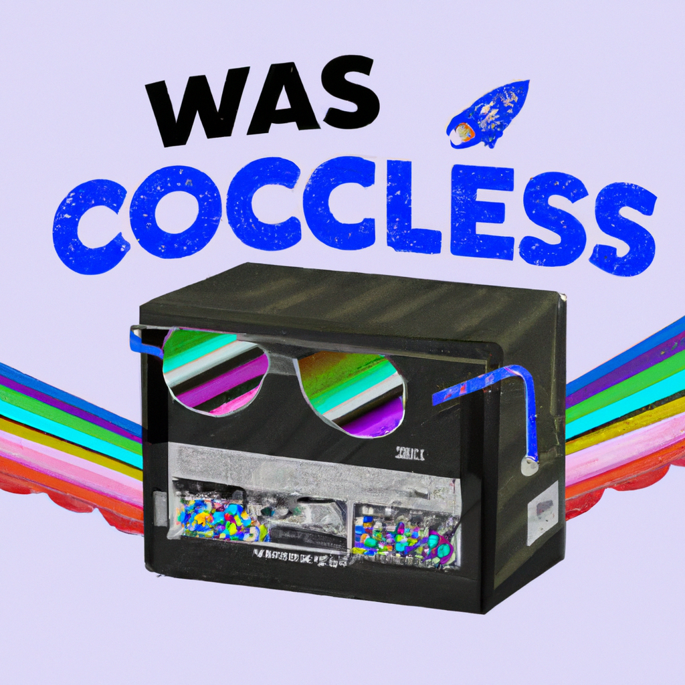

Why Chat GPT is the future
As technology advances and becomes more powerful, so too do the applications and tools that are being developed with it. One of the most exciting new technologies that has recently made its way into the mainstream is Chat GPT. This cutting-edge AI technology developed by Open AI has been making waves in the tech world, and for good reason.
Chat GPT is a type of AI that is able to generate natural language conversations with human-like responses. The AI is able to understand what it is being asked and respond appropriately, even if the user has never interacted with it before. This is a major breakthrough for AI and opens up a huge range of opportunities.
Chat GPT has the potential to revolutionize customer service, as it can provide personalized and accurate responses to customers more quickly and efficiently than a human. It can also be used to provide a more engaging and personalized online experience for customers.
Chat GPT can also be used to help automate tasks, such as data entry and customer service. This could significantly reduce costs and improve efficiency.
Finally, Chat GPT can be used to create more engaging and personalized experiences for users. Developers can use it to create interactive conversations with users or to give users more personalised recommendations.
Chat GPT is an incredibly powerful and exciting technology and has the potential to revolutionize the way we interact with technology. It is definitely worth keeping an eye on as it continues to develop and be used in more and more applications.